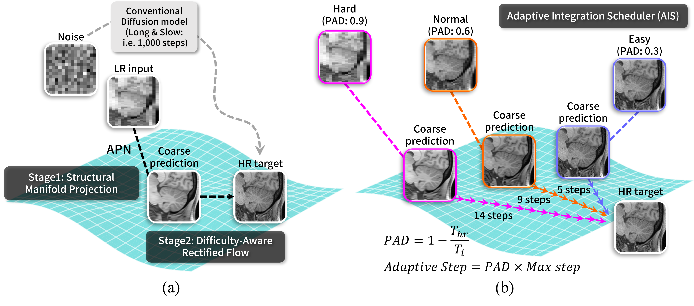
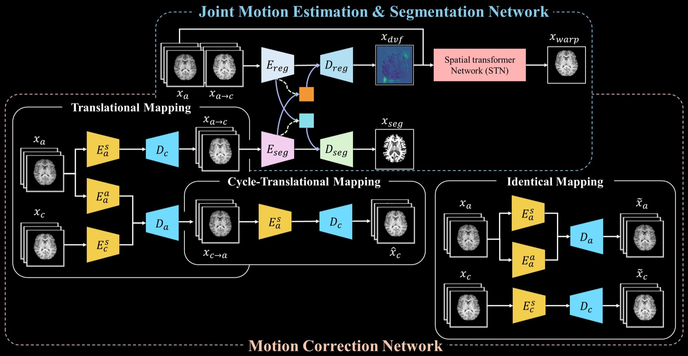
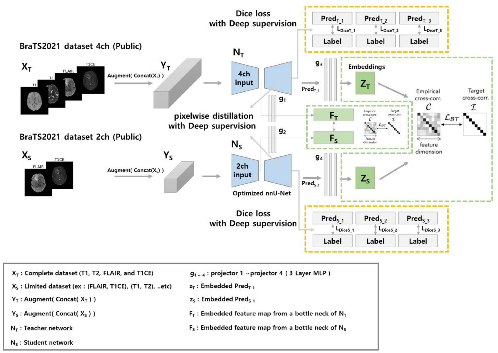

DRIFT: Difficulty-aware Rectified Flows for Through-plane MRI Super-Resolution
Under Review
I am a Ph.D. student at Yonsei University, advised by Prof. Dong-Hyun Kim, in the Medical Imaging Artificial Intelligence Lab (MILAB). In 2025, I worked as a visiting student at the Vision and Learning Lab (VLLab), UC Merced, under the supervision of Prof. Ming-Hsuan Yang, broadening my research into generative modeling and image reconstruction.
My research addresses the missing modality problem in MRI, where incomplete acquisitions are common in clinical practice yet severely limit downstream analysis. I develop methods that leverage knowledge distillation, generative modeling, and disentangled representation learning to enable reliable diagnosis from incomplete data. These techniques, learning from incomplete data and recovering missing information, apply broadly across computer vision. My wider interests include super-resolution, motion artifact correction, and segmentation in brain MRI.




